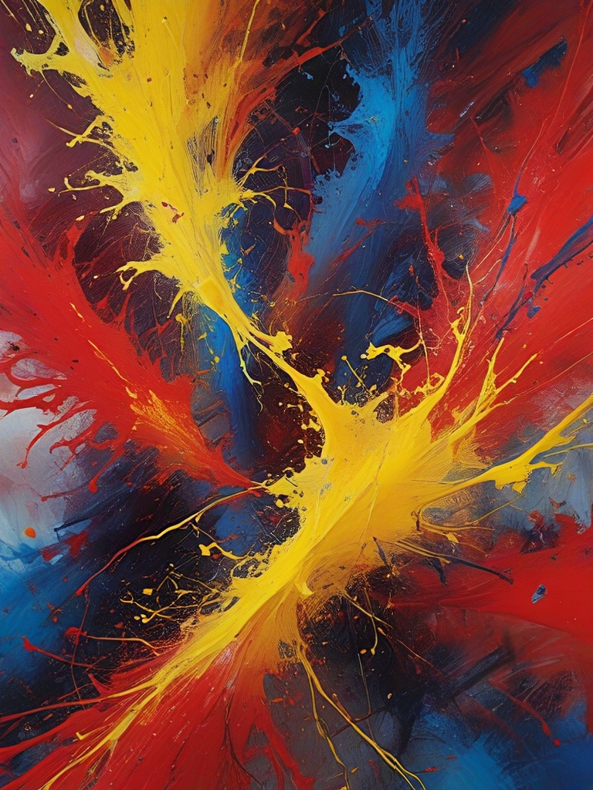

பட உருவாக்கும் குறிப்புகள்
AiCasso மூலம் படங்களை உருவாக்குவது எளிதும் மகிழ்ச்சியுமாக இருக்கிறது! நீங்கள் மிகவும் துல்லியமாக இருக்க வேண்டும் அல்லது உங்கள் இலக்கணம் சரியாக இருக்க வேண்டும் என்று கவலைப்பட வேண்டாம். நீங்கள் நினைத்ததை விவரிக்கவும், AiCasso மீதமுள்ளதை செய்யும். நீங்கள் குறிப்பிட்ட ஒரு பாணியை தேடுகிறீர்களா, ஒரு நிலப்பரப்பு, புகைப்படம் அல்லது சதுர படத்தை வேண்டுமா, AiCasso நீங்கள் என்ன விரும்புகிறீர்கள் என்பதை புரிந்துகொள்ளும், நீங்கள் இலக்கணம் தவறாக செய்தாலும் அல்லது கட்டளைகளை சரியாக பின்பற்றவில்லை என்றாலும்.
எடுத்துக்காட்டுகள்:
குறிப்பு: "சூரியமுதலில் மலைகளுடன் அமைதியான ஏரியை உருவாக்குங்கள், அந்த அழகான பழைய ஓவியங்களைப் போல, சதுர படம், விலங்குகள் அல்லது படகுகள் இல்லாமல்."
முடிவு: AiCasso ஒரு அழகான மலை ஏரியை உருவாக்கும், இது பாரோக் பாணியில், விலங்குகள் அல்லது படகுகள் இல்லாமல், சதுர வடிவத்தில் இருக்கும்.
குறிப்பு: "பிரகாசமான நிறங்களின் பைத்தியம், அப்ஸ்ட்ராக்ட் கலை போல, புகைப்பட அளவு, வடிவங்கள் அல்லது பொருட்கள் இல்லாமல்."

முடிவு: AI எந்த அடையாளம் காணக்கூடிய வடிவங்களும் இல்லாமல், அப்ஸ்ட்ராக்ட் எக்ஸ்பிரஷனிசம் பாணியைப் பின்பற்றி, உயிர்வளர்ந்த நிறங்களின் அப்ஸ்ட்ராக்ட் ஸ்பிளாஷைப் உருவாக்கும்.
குறிப்பு: "சூப்பர் ஹீரோவாக ஒரு மகிழ்ச்சியான கார்டூன் பூனை, 3D பாணி, நிலப்பரப்பு, அது அழகாக இருக்க வேண்டும், பயங்கரமாக இல்லை."
முடிவு: இது ஒரு அழகான 3D கார்டூன் பூனை, சூப்பர் ஹீரோவாக உடை அணிந்து, விளையாட்டான மற்றும் பயங்கரமல்லாத உணர்வுடன், நிலப்பரப்பில் காட்சியளிக்கும்.
பாணிகளை மேம்படுத்தவும்
எந்த பாணியை தேர்வு செய்வது என்று தெரியவில்லை? கவலைப்படாதீர்கள்! உங்கள் மனதில் வரும் எந்த பாணியையும் குறிப்பிடுங்கள், அது இலக்கணமாக சரியானதாக இல்லாவிட்டாலும், AiCasso கிடைக்கக்கூடிய மேம்படுத்தும் பாணிகளின் பட்டியலிலிருந்து அதை புரிந்துகொள்வது.
- இயல்பானது: எந்த குறிப்பிட்ட கலைத்திறனை இல்லாமல் சமநிலையுடன் மற்றும் 중립மான பாணி.
- மேம்படுத்தவும்: விவரங்களை மற்றும் மொத்த அழகியத்தை சிறிது மேம்படுத்துகிறது.
- சினிமா டிவா: வலுவான ஒளி மாறுபாடுகளுடன் ஒரு நாடக, திரைப்படம் போன்ற விளைவுகளைச் சேர்க்கிறது.
- அப்ஸ்ட்ராக்ட் எக்ஸ்பிரஷனிசம்: அப்ஸ்ட்ராக்ட் வடிவங்களை மற்றும் உயிர்வளர்ந்த நிற ஸ்பிளாஷ்களை வலுப்படுத்துகிறது.
- அகாடெமியா: படத்திற்கு கல்வி மற்றும் பாரம்பரியத்தைச் சேர்க்கிறது.
- அக்சன் ஃபிகர்: செயல்திறனுடைய பாணியில் உருவாக்கங்களை உருவாக்குகிறது.
- அழகான 3D கேரக்டர்: அழகான, கார்டூனிஷ் 3D கேரக்டர்களை உருவாக்குகிறது.
- அழகான கைவாய்: கைவாய் கலாச்சாரத்திற்கேற்ப அழகான மற்றும் கவர்ச்சியான பாணியை வலுப்படுத்துகிறது.
- கலை டெக்கோ: கலை டெக்கோ காலத்திற்கேற்ப புள்ளியியல் மற்றும் அலங்கார பாணியைப் பயன்படுத்துகிறது.
- கலை நவோ: கலை நவோவின் தனித்துவமான மற்றும் இயற்கை-inspired கூறுகளைச் சேர்க்கிறது.
- ஆஸ்ட்ரல் ஆரா: ஒரு மாயாஜால மற்றும் பிற உலகத்திற்கேற்ப சூழலை உருவாக்குகிறது.
- அவாந்த் கார்டு: புதுமையான மற்றும் சோதனைக்கான கலை வெளிப்பாடுகளை மையமாகக் கொண்டுள்ளது.
- பாரோக்: பாரோக் காலத்தின் நாடக, விவரமான மற்றும் விரிவான பாணியைப் பயன்படுத்துகிறது.
- பவ்ஹாஸ் பாணி போஸ்டர்: பவ்ஹாஸ் கலைத்திறனின் குறைந்த மற்றும் செயல்திறனுடைய வடிவமைப்பு கொள்கைகளை பிரதிபலிக்கிறது.
- ப்ளூபிரிண்ட் ஸ்கெமாட்டிக் வரைபடம்: தொழில்நுட்ப ப்ளூபிரிண்ட்களைப் போல படங்களை உருவாக்குகிறது.
- காரிகேச்சர்: மிகைப்படுத்தப்பட்ட, கார்டூனிஷ் புகைப்படங்களை உருவாக்குகிறது.
- செல்-ஷேடெட் கலை: செல்-ஷேடெட் அனிமேஷனின் சீரான, வலுவான நிறங்களைப் பயன்படுத்துகிறது.
- கேரக்டர் வடிவமைப்பு தாள்: அனிமேஷனுக்கு ஏற்ற சுத்தமான மற்றும் தெளிவான கேரக்டர் வடிவமைப்புகளை மையமாகக் கொண்டுள்ளது.
- கிளாசிசிசம் கலை: கிளாசிக்கல் பண்டையத்தின் நுட்பமான மற்றும் கற்பனை கலை பாணியைப் பிரதிபலிக்கிறது.
- நிறக் களஞ்சியம் ஓவியம்: ஒரே நிறத்தின் பெரிய பகுதிகளைப் பயன்படுத்தி நிறத்தின் சீரான தளத்தை உருவாக்குகிறது.
- நிறமய Pencil Art: நிறமய பென்சில் வரைபடங்களின் தன்மையைப் பிரதிபலிக்கிறது.
- கான்செப்டுவல் கலை: அழகியல் அல்லது பொருளாதார கவலைகளை விட கருத்துகள் மற்றும் கருத்துக்களை முன்னுரிமை அளிக்கிறது.
- கொன்ஸ்ட்ரக்டிவிசம்: கட்டுமான இயக்கத்தின் தொழில்துறை, புள்ளியியல் பாணியை பிரதிபலிக்கிறது.
- கியூபிசம்: பொருட்களை புள்ளியியல் வடிவங்களில் உடைக்கிறது மற்றும் அவற்றைப் அப்ஸ்ட்ராக்ட் வடிவங்களில் வழங்குகிறது.
- டாடாயிசம்: அபூர்வம், அசாதாரணம் மற்றும் எதிர்மறை கலை அழகியத்தை வலுப்படுத்துகிறது.
- கருப்பு கற்பனை: கருப்பு மற்றும் பயங்கரமான கூறுகளுடன் ஒரு மனநிலை, கோத்திக சூழலை உருவாக்குகிறது.
- கருப்பு மனநிலை சூழல்: மனநிலை சூழலை உருவாக்க கருப்பு ஒளி மற்றும் நிழல்களைப் பயன்படுத்துகிறது.
- DMT கலை: DMT அனுபவங்களால் ஊக்கமளிக்கப்பட்ட, உயிர்வளர்ந்த, உளவியல் காட்சிகளை உருவாக்குகிறது.
- Doodle கலை: சிக்கலான மற்றும் விவரமான, whimsical மற்றும் playful வரைபட பாணிகளை வலுப்படுத்துகிறது.
- Double Exposure: இரண்டு படங்களை ஒன்றாக இணைத்து, ஒரு மாயாஜால, அடுக்கான விளைவுகளை உருவாக்குகிறது.
- Dripping Paint Splatter: சிதறிய மற்றும் கசிந்த பண்ணையைப் பயன்படுத்தி இயக்கம் மற்றும் குழப்பமான அமைப்புகளை உருவாக்குகிறது.
- எக்ஸ்பிரஷனிசம்: உணர்ச்சி வெளிப்பாட்டை உண்மையான பிரதிநிதித்துவத்திற்கு முன்னுரிமை அளிக்கிறது, பெரும்பாலும் வலுவான நிறங்கள் மற்றும் நாடக வடிவங்களைப் பயன்படுத்துகிறது.
- Faded Polaroid Photo: ஒரு மங்கிய போலராயிட் புகைப்படத்தின் பழமையான மற்றும் நினைவூட்டும் தோற்றத்தைப் பிரதிபலிக்கிறது.
- Fauvism: Fauvist இயக்கத்தால் ஊக்கமளிக்கப்பட்ட, உயிர்வளர்ந்த, இயற்கை நிறங்கள் மற்றும் வலுவான வரையறைகளைப் பயன்படுத்துகிறது.
- Flat 2D: எளிய, சதுர வடிவமைப்புகளை வலுப்படுத்துகிறது, குறைந்த அளவிலான நிழலோடு அல்லது ஆழத்தோடு, பெரும்பாலும் கார்டூன் பாணியில்.
- Fortnite Style: Fortnite வீடியோ விளையாட்டிற்கேற்ப உயிர்வளர்ந்த, கார்டூனிஷ் கலை பாணியை பிரதிபலிக்கிறது.
- Futurism: இயக்கம், ஆற்றல் மற்றும் எதிர்கால தொழில்நுட்பங்களைப் பிரதிபலிக்கிறது.
- Glitchcore: கலை பாணியாக டிஜிட்டல் பிழைகள் மற்றும் க்ளிட்சுகளை வலுப்படுத்துகிறது, பெரும்பாலும் சிதறிய காட்சிகளுடன்.
- Glo-Fi: கனவான, மாயாஜாலமான சூழலை உருவாக்க மென்மையான, ஒளிரும் ஒளியைப் பயன்படுத்துகிறது.
- Googie Style: 20ஆம் நூற்றாண்டின் நடப்பு மற்றும் விண்வெளி காலத்திற்கேற்ப வடிவமைப்பு போக்கு.
- Graffiti Art: கிராஃபிட்டி மற்றும் நகர மூரல்களின் உயிர்வளர்ந்த, தெரு-பாணி அழகியத்தைப் பயன்படுத்துகிறது.
- Harlem Renaissance Art: ஹார்லெம் மறுசீரமைப்பின் பண்பாட்டு மற்றும் கலை வெளிப்பாடுகளை பிரதிபலிக்கிறது.
- High Fashion: உயர்ந்த ஃபேஷன் அழகியத்தை வலுப்படுத்துகிறது, பெரும்பாலும் நுட்பமான மற்றும் அலங்காரமானது.
- Idyllic: அமைதியான, அமைதியான மற்றும் பெரும்பாலும் பாஸ்டரல் சூழலை உருவாக்குகிறது.
- Impressionism: ஒளி மற்றும் சூழலின் விளைவுகளைப் பிடிக்க சிதறலான வரையறைகள் மற்றும் உயிர்வளர்ந்த நிறங்களைப் பயன்படுத்துகிறது.
- Infographic Drawing: தகவல்களை கிராபிகலாக வழங்குவதற்கான தெளிவான, கண்ணுக்கு பிடிக்கக்கூடிய வடிவமைப்புகளை வலுப்படுத்துகிறது.
- Ink Dripping Drawing: ஒரு வரைபடத்தில் திரவியமான, கசிந்த விளைவுகளை உருவாக்க முத்திரையைப் பயன்படுத்துகிறது.
- Japanese Ink Drawing: ஜப்பானிய முத்திரை கலைத்திறனின் பாரம்பரிய வரையறை தொழில்நுட்பங்களைப் பிரதிபலிக்கிறது.
- Knolling Photography: பொருட்களின் சுத்தமான மற்றும் ஒழுங்கான அமைப்பை வலுப்படுத்துகிறது, பெரும்பாலும் மேலிருந்து புகைப்படம் எடுக்கப்படுகிறது.
- Light Cheery Atmosphere: களஞ்சியமான மற்றும் உயர்ந்த சூழலை உருவாக்க பிரகாசமான நிறங்கள் மற்றும் ஒளியைப் பயன்படுத்துகிறது.
- Logo Design: சுத்தமான, அடையாளம் காணக்கூடிய லோகோக்களை மற்றும் பிராண்டிங் கூறுகளை உருவாக்க மையமாகக் கொண்டுள்ளது.
- Luxurious Elegance: நுட்பத்தையும் செழுமையையும் வலுப்படுத்துகிறது, பெரும்பாலும் செழுமையான உருப்படிகள் மற்றும் பொருட்களுடன்.
- Macro Photography: மிக அருகிலிருந்து புகைப்படங்களை எடுக்கிறது, பெரும்பாலும் கண்மூடியாகக் காண முடியாத சிக்கலான விவரங்களை வெளிப்படுத்துகிறது.
- Mandala Art: பாரம்பரிய மண்டல வடிவமைப்புகளால் ஊக்கமளிக்கப்பட்ட சிக்கலான, ஒத்த வடிவங்களை உருவாக்குகிறது.
- Marker Drawing: மார்கர் வரைபடங்களின் வலுவான, உயிர்வளர்ந்த வரையறைகளைப் பிரதிபலிக்கிறது.
- Medievalism: மத்திய காலத்தின் கலை மற்றும் வடிவமைப்பு அழகியத்தை பிரதிபலிக்கிறது.
- Minimalism: எளிமையை மற்றும் வடிவங்களை அவற்றின் அடிப்படை கூறுகளுக்கு குறைக்கிறது.
- Neo-Baroque: பாரோக் காலத்தின் செழுமையான, நாடக பாணியை, நவீன தாக்கங்களுடன் உயிர்ப்பிக்கிறது.
- Neo-Byzantine: பைசாந்தின் செழுமையான, மத கலை பாணியை நவீன கூறுகளுடன் இணைக்கிறது.
- Neo-Futurism: நவீன, உயர் தொழில்நுட்ப அழகியத்துடன் எதிர்கால வடிவமைப்புகளை மையமாகக் கொண்டுள்ளது.
- Neo-Impressionism: நியோ-இம்பிரெஷனிஸ்ட் இயக்கத்தால் ஊக்கமளிக்கப்பட்ட, சிறிய, தனித்த நிறக் குள்ளங்களைப் பயன்படுத்தி படங்களை உருவாக்குகிறது.
- Neo-Rococo: நவீன திருப்பங்களுடன் ரொக்கோ காலத்தின் விரிவான, அலங்கார பாணியை உயிர்ப்பிக்கிறது.
- Neoclassicism: கிளாசிக்கல் பண்டையத்தின் கலை மற்றும் வடிவமைப்பு அழகியத்தை பிரதிபலிக்கிறது, சமநிலையையும் எளிமையையும் வலுப்படுத்துகிறது.
- Op Art: புள்ளியியல் வடிவங்கள் மற்றும் மாறுபாடுகளைப் பயன்படுத்தி கண்ணோட்ட மாயாஜாலங்களை உருவாக்குகிறது.
- Ornate and Intricate: அலங்காரத்தை மையமாகக் கொண்டு, மிகவும் விவரமான, விரிவான வடிவமைப்புகளை வலுப்படுத்துகிறது.
- Pencil Sketch Drawing: பென்சில் வரைபடங்களின் தன்மையைப் பிரதிபலிக்கிறது.
- Pop Art: பிரபல கலாச்சாரம் மற்றும் mass media மூலம் ஊக்கமளிக்கப்பட்ட வலுவான நிறங்கள் மற்றும் காட்சிகளைப் பயன்படுத்துகிறது.
- Rococo: ரொக்கோ காலத்தின் விரிவான, அலங்கார கலை பாணியை பிரதிபலிக்கிறது, எளிமை மற்றும் அழகை வலுப்படுத்துகிறது.
- Silhouette Art: வலுவான ஒளி மற்றும் நிழலுக்கு இடையில் வலுப்படுத்தி, வலுவான, சாயலான படங்களை உருவாக்குகிறது.
- Simple Vector Art: சுத்தமான, புள்ளியியல் வடிவங்கள் மற்றும் சதுர நிறங்களை வலுப்படுத்துகிறது, வெகுஜன கலைக்கேற்ப.
- SketchUp: SketchUp மென்பொருளைப் பயன்படுத்தி உருவாக்கப்பட்ட 3D மாதிரிகளின் தோற்றத்தைப் பிரதிபலிக்கிறது.
- Steampunk: விக்டோரியன் காலத்தின் அழகியத்துடன், நீர்த்தொகுப்புப் தொழில்நுட்பத்தை இணைத்து, ஒரு பழமையான-எதிர்கால பாணியை உருவாக்குகிறது.
- Surrealism: யதார்த்தம் மற்றும் கனவுபோன்ற காட்சிகளை இணைத்து, மாயாஜாலமான, கற்பனை காட்சிகளை உருவாக்குகிறது.
- Suprematism: அடிப்படை புள்ளியியல் வடிவங்கள் மற்றும் வரையறுக்கப்பட்ட நிறக் களஞ்சியங்களை மையமாகக் கொண்டுள்ளது, சூப்பிரமதிய இயக்கத்தால் ஊக்கமளிக்கப்பட்டது.
- Terragen: Terragen மென்பொருளைப் பயன்படுத்தி உருவாக்கப்பட்ட யதார்த்தமான, கணினி உருவாக்கப்பட்ட நிலப்பரப்புகளை பிரதிபலிக்கிறது.
- Tranquil Relaxing Atmosphere: மென்மையான நிறங்கள் மற்றும் அமைதியான காட்சிகளைப் பயன்படுத்தி அமைதியான மற்றும் அமைதியான சூழலை உருவாக்குகிறது.
- Sticker Designs: ஸ்டிக்கர்களுக்கு ஏற்ற, விளையாட்டான, கார்டூனிஷ் படங்களை உருவாக்க மையமாகக் கொண்டுள்ளது.
- Vibrant Rim Light: பொருட்களின் சுற்றிலும் பிரகாசமான, சுற்றுப்புற ஒளியை வலுப்படுத்துகிறது, ஒரு கவர்ச்சியான, உயிர்வளர்ந்த விளைவுகளை உருவாக்குகிறது.
- Volumetric Lighting: ஆழம் மற்றும் பரிமாணத்தை உருவாக்க ஒளி கதிர்கள் மற்றும் சூழல் விளைவுகளைப் பயன்படுத்துகிறது.
- Watercolor: நீர்வண்ண ஓவியங்களின் மென்மையான, ஓடிய உருப்படிகளைப் பிரதிபலிக்கிறது.
- Whimsical and Playful: இளஞ்சிவப்பு, கற்பனை மற்றும் பெரும்பாலும் விசித்திரமான காட்சிகளை மையமாகக் கொண்டுள்ளது.
- Sharp: தெளிவையும் முனைகளின் வரையறையையும் மேம்படுத்துகிறது, ஒரு தெளிவான தோற்றத்திற்கு.
- Masterpiece: உயர் தரமான, விவரமான மற்றும் மெருகூட்டப்பட்ட கலை வெளிப்பாட்டை வலுப்படுத்துகிறது.
- Photograph: யதார்த்தமான மற்றும் உயிர்வளர்ந்த புகைப்படத் தரத்தை நோக்குகிறது.
- Negative: புகைப்பட நெகட்டிவ் விளைவுகளை உருவாக்க நிறங்களை மாற்றுகிறது.
- Ads - Advertising: விளம்பரத்திற்கு ஏற்ற சுத்தமான, தொழில்முறை காட்சிகளை மையமாகக் கொண்டுள்ளது.
- Ads - Automotive: இயக்கவியல் மற்றும் மெருகூட்டப்பட்ட வாகன விளம்பரத்திற்கேற்ப காட்சியியல் பாணியை உருவாக்குகிறது.
- Ads - Corporate: நிறுவன அமைப்புகளுக்கு ஏற்ற, சுத்தமான, தொழில்முறை வடிவமைப்பை வலுப்படுத்துகிறது.
- Ads - Fashion Editorial: ஃபேஷன் எடிட்டோரியல்களில் பயன்படுத்தப்படும் ஸ்டைலிஷ், உயர்ந்த ஃபேஷன் தோற்றத்தை வலுப்படுத்துகிறது.
- Ads - Food Photography: உணவுப் புகைப்படங்களின் உயிர்வளர்ந்த மற்றும் சுவையான தோற்றத்திற்கேற்ப படங்களை மேம்படுத்துகிறது.
- Ads - Gourmet Food Photography: குர்மே உணவுப் புகைப்படங்களின் செழுமையான, விவரமான அழகியத்தை வலுப்படுத்துகிறது.
- Ads - Luxury: செழுமையான பிராண்டுகளுக்கு ஏற்ற செழுமையான, உயர்ந்த பாணியை வலுப்படுத்துகிறது.
- Ads - Real Estate: ரியல் எஸ்டேட் விளம்பரங்களுக்கு ஏற்ற சுத்தமான மற்றும் அழகான காட்சிகளை வலுப்படுத்துகிறது.
- Ads - Retail: விற்பனை விளம்பரங்களுக்கு ஏற்ற கவர்ச்சியான, நுகர்வோர் மையமான பாணியை வலுப்படுத்துகிறது.
- Hyperrealism: மிகவும் விவரமான, உயிர்வளர்ந்த காட்சி பாணியை நோக்குகிறது.
- Pointillism: புள்ளியியல் இயக்கத்தால் ஊக்கமளிக்கப்பட்ட, சிறிய, தனித்த நிறக் குள்ளங்களைப் பயன்படுத்தி படங்களை உருவாக்குகிறது.
- Psychedelic: உளவியல் கலை மூலம் ஊக்கமளிக்கப்பட்ட, உயிர்வளர்ந்த நிறங்கள் மற்றும் மாயாஜால காட்சிகளை வலுப்படுத்துகிறது.
- Renaissance: ரெனசான்ஸ் கலைக்கேற்ப ஒத்த, கிளாசிக்கல் பாணியை பிரதிபலிக்கிறது.
- Typography: எழுத்து மற்றும் எழுத்துருக்களின் கலைத்திறனை மற்றும் கலைத்திறனைப் பயன்படுத்துவதில் மையமாகக் கொண்டுள்ளது.
- Futuristic Biomechanical: உயர் தொழில்நுட்ப, உயிரியல் கூறுகளை உருவாக்க, எதிர்கால மற்றும் உயிரியல் கூறுகளை இணைக்கிறது.
- Futuristic Biomechanical Cyberpunk: உயிரியல் மற்றும் சைபர்பங்க் அழகியங்களை இணைத்து, ஒரு கடுமையான, எதிர்கால தோற்றத்தை உருவாக்குகிறது.
- Futuristic Cybernetic: உயர் தொழில்நுட்ப, சைபர்நெடிக் காட்சிகளை மையமாகக் கொண்டுள்ளது.
- Futuristic Cybernetic Robot: எதிர்காலத்திற்கேற்ப ரோபோட்ட மற்றும் சைபர்நெடிக் வடிவமைப்புகளை வலுப்படுத்துகிறது.
- Futuristic Cyberpunk Cityscape: சைபர்பங்க் கலைக்கேற்ப கடுமையான, நியான்-ஒளியுள்ள நகரக் காட்சிகளை பிரதிபலிக்கிறது.
- Futuristic Sci-Fi: எதிர்கால மற்றும் அறிவியல் கற்பனை மூலம் ஊக்கமளிக்கப்பட்ட அழகியத்தைக் கொண்டுள்ளது.
- Futuristic Retro Cyberpunk: பழமையான மற்றும் சைபர்பங்க் கூறுகளை இணைத்து, ஒரு நினைவூட்டும் ஆனால் எதிர்கால பாணியை உருவாக்குகிறது.
- Futuristic Retro: எதிர்கால காட்சிகளை பழமையான வடிவமைப்பு கூறுகளுடன் இணைக்கிறது.
- Futuristic Vaporwave: வெப்பமான, மாயாஜால காட்சிகளை வலுப்படுத்துகிறது, இது வெப்பமான கலைக்கேற்ப.
- Game Bubble: சாதாரண விளையாட்டுகளில் காணப்படும் விளையாட்டான, குளோபல் அழகியத்தை மையமாகக் கொண்டுள்ளது.
- Game Cyberpunk: விளையாட்டு வடிவமைப்பு கூறுகளை சைபர்பங்க் அழகியத்துடன் இணைக்கிறது.
- Game Fighting: போராட்ட விளையாட்டுகளின் மையமான, தீவிரமான பாணியை பிரதிபலிக்கிறது.
- Game GTA: கிராண்ட் தெஃப் ஆட்டோ விளையாட்டுகளின் கடுமையான, நகர பாணியை பிரதிபலிக்கிறது.
- Game Mario: மாரியோ விளையாட்டுகளின் உயிர்வளர்ந்த, கார்டூனிஷ் பாணியை மையமாகக் கொண்டுள்ளது.
- Game Minecraft: மைன்கிராப்ட் விளையாட்டுகளின் பிளாக்கான, பிக்சலேட்டான பாணியை பிரதிபலிக்கிறது.
- Game Pokemon: போக்கிமான் விளையாட்டுகளின் உயிர்வளர்ந்த, அனிமே-ஊக்கமளிக்கப்பட்ட பாணியை பிரதிபலிக்கிறது.
- Game Retro Arcade: பழமையான ஆர்கேட் விளையாட்டுகளின் நினைவூட்டும், பிக்சலேட்டான பாணியை வலுப்படுத்துகிறது.
- Game RPG Fantasy: RPG விளையாட்டுகளின் விவரமான, கற்பனை-ஊக்கமளிக்கப்பட்ட அழகியத்தை பிரதிபலிக்கிறது.
- Game Strategy: உத்தி விளையாட்டுகளின் சுத்தமான, செயல்திறனுடைய வடிவமைப்பை மையமாகக் கொண்டுள்ளது.
- Game Streetfighter: ஸ்ட்ரீட் ஃபைட்டர் விளையாட்டுகளின் வலுவான, தீவிரமான பாணியை பிரதிபலிக்கிறது.
- Game Zelda: ஜெல்டா விளையாட்டுகளின் கற்பனை-ஊக்கமளிக்கப்பட்ட பாணியை பிரதிபலிக்கிறது.
- Misc Architectural: சுத்தமான, துல்லியமான கட்டிட வடிவமைப்புகளை மையமாகக் கொண்டுள்ளது.
- Misc Disco: டிஸ்கோ கலாச்சாரத்திற்கேற்ப உயிர்வளர்ந்த, நியான்-ஒளியுள்ள அழகியத்தை வலுப்படுத்துகிறது.
- Misc Dreamscape: மாயாஜால, கனவுபோன்ற சூழல்களை உருவாக்குகிறது.
- Misc Dystopian: துரோகமான சூழல்களின் கடுமையான, கறுப்பு காட்சிகளை பிரதிபலிக்கிறது.
- Misc Fairy Tale: கற்பனை கதைத் தன்மைகளை வலுப்படுத்துகிறது.
- Misc Gothic: கோத்திக கலை மற்றும் கட்டிடக்கலைக்கு ஏற்ற கறுப்பு, அலங்காரமான பாணியை பிரதிபலிக்கிறது.
- Misc Grunge: கிரஞ்ச் கலாச்சாரத்திற்கேற்ப கடுமையான, கச்சிதமான அழகியத்தை வலுப்படுத்துகிறது.
- Misc Horror: பயங்கரமான, அச்சுறுத்தும் காட்சிகளை மையமாகக் கொண்டுள்ளது.
- Misc Kawaii: கைவாய் கலாச்சாரத்திற்கேற்ப அழகான, கவர்ச்சியான பாணியை பிரதிபலிக்கிறது.
- Misc Lovecraftian: லவ்கிராஃப்டியன் கற்பனையின் பயங்கரமான, விண்மீன் மாயாஜாலத்தை வலுப்படுத்துகிறது.
- Misc Macabre: கருப்பு, மர்மமான மற்றும் அச்சுறுத்தும் தீமைகளை மையமாகக் கொண்டுள்ளது.
- Misc Manga: மாங்காவின் வலுவான, உயிர்வளர்ந்த பாணியை பிரதிபலிக்கிறது.
- Misc Metropolis: நவீன நகரங்களின் சுத்தமான, நகர அழகியத்தை பிரதிபலிக்கிறது.
- Misc Minimalist: எளிமையை மற்றும் வடிவங்களை அவற்றின் அடிப்படை கூறுகளுக்கு குறைக்கிறது.
- Misc Monochrome: ஒரே நிறத்தின் மாறுபட்ட நிழல்களில் உருவாக்கப்பட்ட படங்களை மையமாகக் கொண்டுள்ளது.
- Misc Nautical: கடல்-தீமைகளின் அழகியத்திற்கேற்ப கடல்-பாரம்பரியத்தை பிரதிபலிக்கிறது.
- Misc Space: விண்வெளி சூழல்களின் பரந்த, பிற உலகத்திற்கேற்ப காட்சிகளை வலுப்படுத்துகிறது.
- Misc Stained Glass: மஞ்சள் கண்ணாடி கலைக்கேற்ப சிக்கலான, நிறமயமான வடிவங்களை பிரதிபலிக்கிறது.
- Misc Techwear Fashion: தொழில்நுட்பம் மற்றும் செயல்திறனுடைய அழகியத்திற்கேற்ப மையமாகக் கொண்டுள்ளது.
- Misc Tribal: பழங்கால கலைக்கேற்ப வலுவான, பண்பாட்டு அழகியத்தை பிரதிபலிக்கிறது.
- Misc Zentangle: சென்டாங்கிள் கலைக்கேற்ப சிக்கலான, மீண்டும் மீண்டும் உருவாக்கங்களை வலுப்படுத்துகிறது.
- Papercraft Collage: அடுக்கான, உருப்படிகளை உருவாக்க வெட்டிய காகிதத்தைப் பயன்படுத்துகிறது.
- Papercraft Flat Papercut: சதுர, வெட்டிய காகித வடிவங்களை வலுப்படுத்துகிறது.
- Papercraft Kirigami: கிறிகாமியின் சிக்கலான, மடிக்கோல் வடிவங்களை மையமாகக் கொண்டுள்ளது.
- Papercraft Paper Mache: உருப்படிகளை உருவாக்க காகித மாசே பயன்படுத்துகிறது.
- Papercraft Paper Quilling: காகிதக் குவிலிங்கின் நுட்பமான, உருப்படிகளை வலுப்படுத்துகிறது.
- Papercraft Papercut Collage: அடுக்கான காகித கூறுகளை இணைத்து அடுக்கான காட்சிகளை உருவாக்குகிறது.
- Papercraft Papercut Shadow Box: மூன்று பரிமாணங்களைக் கொண்ட காட்சிகளை உருவாக்க அடுக்கான காகிதங்களைப் பயன்படுத்துகிறது.
- Papercraft Stacked Papercut: அடுக்கான, அடுக்கான காகித வடிவங்களை மையமாகக் கொண்டுள்ளது.
- Papercraft Thick Layered Papercut: தடிமனான, அடுக்கான தோற்றத்தை வலுப்படுத்துகிறது.
- Photo Alien: மாயாஜால, வெளிநாட்டு காட்சிகளை மையமாகக் கொண்டுள்ளது.
- Photo Film Noir: திரைப்பட நோயரின் கறுப்பு, மனநிலை அழகியத்தை வலுப்படுத்துகிறது.
- Photo Glamour: மெருகூட்டப்பட்ட, ஸ்டைலிஷ் தோற்றத்தை வலுப்படுத்துகிறது.
- Photo HDR: ஒளி மற்றும் நிறத்தின் பரந்த வரம்புடன் படங்களை உருவாக்க உயர் டைனமிக் ரேஞ்ச் (HDR) பயன்படுத்துகிறது.
- Photo iPhone Photographic: ஐபோன் புகைப்படங்களின் சுத்தமான, நவீன பாணியை பிரதிபலிக்கிறது.
- Photo Long Exposure: இயக்கம்-மங்கலான விளைவுகளை உருவாக்க நீண்ட வெளிப்பாட்டைப் பயன்படுத்துகிறது.
- Photo Neon Noir: நியான் ஒளியுடன் கறுப்பு, மனநிலை அழகியத்தை இணைக்கிறது.
- Photo Silhouette: சாயலான படங்களை உருவாக்க வலுவான ஒளி மற்றும் நிழலுக்கு இடையில் வலுப்படுத்துகிறது.
- Photo Tilt Shift: சிறிய, பொம்மை போன்ற தோற்றத்தை உருவாக்க டில்ட்-ஷிப்ட் விளைவுகளைப் பயன்படுத்துகிறது.
- 3D Model: 3D மாதிரிகளின் சுத்தமான, விவரமான தோற்றத்தை மையமாகக் கொண்டுள்ளது.
- Analog Film: அனலாக் திரைப்பட புகைப்படங்களின் தானியங்கி, உருப்படிகளைப் பிரதிபலிக்கிறது.
- Anime: அனிமேவின் உயிர்வளர்ந்த, வலுவான பாணியை வலுப்படுத்துகிறது.
- Cinematic: வலுவான ஒளி மற்றும் அமைப்புகளுடன் நாடக, திரைப்படம் போன்ற விளைவுகளை உருவாக்குகிறது.
- Comic Book: காமிக் புத்தகக் கலைக்கேற்ப வலுவான வரையறைகள் மற்றும் உயிர்வளர்ந்த நிறங்களைப் பயன்படுத்துகிறது.
- Craft Clay: க clay மாதிரிகளின் உருப்படிகளைப் பிரதிபலிக்கிறது.
- Digital Art: சுத்தமான, மெருகூட்டப்பட்ட டிஜிட்டல் கலைத்திறனை மையமாகக் கொண்டுள்ளது.
- Fantasy Art: கற்பனை கலைக்கேற்ப விவரமான, கற்பனை காட்சிகளை வலுப்படுத்துகிறது.
- Isometric: மூன்று பரிமாண தோற்றத்தை உருவாக்க ஒரு ஐசோமெட்ரிக் பார்வையைப் பயன்படுத்துகிறது.
- Line Art: விவரமான வரைபடங்களை உருவாக்க சுத்தமான, தெளிவான வரையறைகளை மையமாகக் கொண்டுள்ளது.
- Low Poly: குறைந்த புள்ளியியல் 3D மாதிரிகளைப் பயன்படுத்தி ஒரு எளிமையான, புள்ளியியல் தோற்றத்தை உருவாக்குகிறது.
- Neonpunk: நியான் ஒளியுடன் சைபர்பங்கின் கடுமையான அழகியத்தை இணைக்கிறது.
- Origami: ஒரிகாமியின் சிக்கலான, மடிக்கோல் வடிவங்களை மையமாகக் கொண்டுள்ளது.
- Photographic: யதார்த்தமான, உயிர்வளர்ந்த காட்சிகளை நோக்குகிறது.
- Pixel Art: பழமையான, வீடியோ விளையாட்டு-ஊக்கமளிக்கப்பட்ட தோற்றத்தை உருவாக்க பிக்சலேட்டான வடிவங்களைப் பயன்படுத்துகிறது.
- Texture: காட்சி ஆழத்தை மேம்படுத்த செழுமையான, விவரமான உருப்படிகளை மையமாகக் கொண்டுள்ளது.